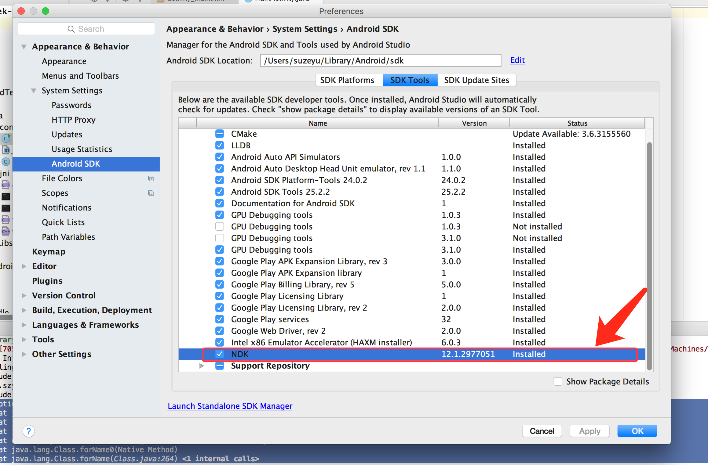

第14章: 弥补Java的跨平台特性导致的于本地交互能力不足而出现的.
Java JNI本意为Java Native Interface(java本地接口), 是为方便java调用C或者C++等本地代码所封装的一层接口. 由于Java的跨平台性导致本地交互能力的不好, 一些和操作系统相关的特性Java无法完成, 于是Java提供了JNI专门用于和本地代码交互.
NDK是android所提供的一个工具合集, 通过NDK可以在Android中更加方便地通过JNI来访问本地代码. NDK还提供了交叉编译工具, 开发人员只需要简单的修改mk文件就可以生成特定的CPU平台的动态库. 好处如下:
- 提供代码的安全性. so库反编译比较困难
- 可以很方便地使用目前已有的C/C++开源库
- 提高程序在某些特定情形下得执行效率, 但是不能明显提高Android程序的的性能.
JNI的开发流程
大体步骤就是在java中声明native方法, 然后调用c/c++实现的native的方法. 下面开始具体步骤
1. 在Java中声明native方法
创建一个java类
package com.szysky.note.androiddevseek_14; |
首先是通过静态代码块先加载so库, 然后声明两个native方法提供使用. 这两个方法需要在JNI中实现. 加载so库名称填入的虽然是jni-test, 但是so库全名称应该是libjni-test.so,这是加载so库的规范.
2. 编辑Java源文件得到class文件, 然后通过javah命令导出JNI头文件
在包的的根路径, 进行命令操作
javac com/szysky/note/androiddevseek_14/JNITest.java |
执行之后会在, 操作的路径下生成一个com_szysky_note_androiddevseek_14_JNITest.h头文件, 这个就是第二步生成的东西.
/* DO NOT EDIT THIS FILE - it is machine generated */ |
对生成的.h文件进行一下说明:
- 函数名:格式遵循:
Java_包名_类名_方法名包名之间的.分割全部替换成_分割. - 参数:
jstring是代表String类型参数. 具体的类型关系后面会说明. JNIEnv *: 表示一个指向JNI环境的指针, 可以通过它来访问JNI提供的方法.
jobject: 表示java对象中的this.
JNIEXPORT和JNICALL: 这是JNI种所定义的宏, 可以在jni.h这个头文件查到
|
而这个宏定义是必须的, 作用是指定extern”C”内部的函数采用C语言的命名风格来编译. 如果设定那么当JNI采用C++来实现时, 由于C/C++编译过程对函数的命名风格不同, 这将导致JNI在链接时无法根据函数名找到具体的函数, 那么JNI调用肯定会失效.
3. 实现JNI方法
JNI方法是指的Java中声明的native方法, 这里可以选择c++和c来实现. 过程都是类似的. 只有少量的区别, 这里两种都实现一下.
首先是C++
在工程的主目录创建一个子目录, 名称任意, 然后将之前通过javah命令生成的**.h头文件**复制到创建的目录下, 接着创建test.cpp实现如下:
// Created by 苏泽钰 on 16/8/27. |
在看一下C的实现:
// Created by 苏泽钰 on 16/8/27. |
其实C\C++在实现上很相似, 但是对于env的操作方式有所不同.
4. 编写so库并在java中调用
so库的编译这里采用gcc(Linux, mac环境下, window不清楚). 命令cd到放置刚才生成c/c++的目录下.
使用如下命令:gcc -shared -I /Library/Java/JavaVirtualMachines/jdk1.8.0_91.jdk/include -fPIC test.cpp -o libjni-test.so
Linux
/Library/Java/JavaVirtualMachines/jdk1.8.0_91.jdk这个就是java的环境目录. 书上这条操作是在Linux,如果你是mac系统, 请这样修改一下,要不无法编译
Mac
首先找到你的Java环境的目录然后在后面追加Content/Home/来替换上面的路径. 这么做的意义可以上mac电脑下看一下/Library/Java/JavaVirtualMachines/jdk1.8.0_91.jdk/Contents/Home/include发现文件夹下有有一个jni.h的文件, 这个文件在我们生成的头文件中有过导入, 这下明白了为什么修改了吧, 别急还有一步, 在jni.h中还会导入一个jni_md.h这个文件默认在jni.h的同级目录有一个darwin文件夹下把这个文件也拷贝出来放在和jni.h同级, 然后执行下面命令:
gcc -shared -I /Library/Java/JavaVirtualMachines/jdk1.8.0_91.jdk/Contents/Home/include -fPIC test.cpp -o libjni-test.jnilib
(别忘了替换路径)
如果是mac系统, 那么生成.jnilib而不是.so. 不然生成了so在通过java命令执行的时候会抛出
Exception in thread "main" java.lang.UnsatisfiedLinkError: no jni-test in java.library.path |

然后库已经生成完了, 我们就检测一下吧. 这里使用Java命令执行, 因为需要指定库路径, 回到包的根目录
java -Djava.library.path=jni com.szysky.note.androiddevseek_14.JNITest
看一下输出结果:

ok, 关于JNI的java调用c/c++代码, 简单的演示了
NDK的开发流程
NDK的开发是基于JNI的, 主要有如下步骤
1. 下载并进行配置NDK
首先要下载NDK. NDK下载地址 下载后解压. 或者你可以直接在Android SDK Manager下载.

如果在sdk manager下载那么就在上面图中上部的Android SDK Location指定根目录下的ndk-bundle文件夹.
接下来就配置一下全局环境, 这里是mac系统下的操作(Linux修改~/.bashrc文件), 命令行直接输出:
open ~/.bash_profile 添加一下配置
# 设置ndk环境路径 |
可以使用ndk-build检测是否成功了, 之后就可以使用ndk-build命令产生编译so的库. 这里使用的NDK版本是android-ndk-r12d
2. 创建一个android项目, 在类中声明所需的native方法
这一步和上面创建java普通类的方法一样.
|
3. 实现Android项目中所声明的native方法
jniLibs是AndroidStudio默认目录，用来存放已经编译好的.so文件，当然你也可以放在任意自定义目录下，例如src/main/libs，然后在build.gradle中指定相应的资源目录位置即可：
android { |
上面是已经有了so文件的方式. 下面说说如果只有**c/c++**源码
这里有两种实现一种是手动使用ndk-build的命令, 一种利用gradle
利用gradle来生成
这里书上的方法已经不适用, 上网查询了一下是因为gradle文件首行使用的插件apply plugin: 'com.android.application'导致
使用传统的ndk-build来实现吧
在jni下创建3个文件, test.cpp, Android.mk, Application.mk三个文件
// 这是test.cpp文件 |
这里说明一个mk文件:
LOCAL_MODULE:表示模块的名称LOCAL_SRC_FILES:表示需要参与的源文件APP_ABI:表示CPU的架构平台类型. 如armeabi,x86,mips等.
而test.cpp这个文件
要注意这里的函数名换成再调用处的所在类, 按照生成的JNI的函数的命名规则.
4. 切换到jni目录的父目录下, 通过ndk-build命令编译产生so库
命令行截图:

这些做完了, 使用命令生成. 如下图:

在产生的libs目录下把生成的so文件放在Android Studio的默认so路径下 Main/jniLibs文件夹下. 我在测试的时候, 必须要把jni文件夹内容删掉,否则会报错, 按照错误提示应该也可以通过gradle来在运行时候忽略此文件
为了保留生成必须代码而不影响运行, 原jni内容被移动到backup文件夹中.
JNI的数据类型和类型签名
JNI的数据类型包含两种: 基本类型和引用类型.
基本类型主要有jboolean, jchar, jint等, 和Java中的数据类型对应如下:
| JNI类型 | Java类型 | 描述 |
|---|---|---|
| jboolean | boolean | 无符号8位整型 |
| jbyte | byte | 无符号8位整型 |
| jchar | char | 无符号16位整型 |
| jshort | short | 有符号16位整型 |
| jint | int | 32位整型 |
| jlong | long | 64位整型 |
| jfloat | float | 32位浮点型 |
| jdouble | double | 64位浮点型 |
| void | void | 无类型 |
JNI中的引用类型主要有类, 对象和数组. 他们和Java中的引用类型的对应关系如下:
| JNI类型 | Java类型 | 描述 |
|---|---|---|
| jobject | Object | Object类型 |
| jclass | Class | Class类型 |
| jstring | String | String类型 |
| jobjeckArray | Object[] | 对象数组 |
| jbooleanArray | boolean[] | boolean数组 |
| jbyteArray | byte[] | byte数组 |
| jcharArray | char[] | char数组 |
| jshortArray | short[] | short数组 |
| jintArray | int[] | int数组 |
| jlongArray | long[] | long数组 |
| jfloatArray | float[] | float数组 |
| jdoubleArray | double[] | double数组 |
| jthrowable | Throwable | Throwable |
JNI的类型签名标识了一个特定的Java类型, 这个类型既可以是类也可以是方法, 也可以是数据类型.
类的签名比较简单, 它采用L+包名+类型+;的形式, 只需要将其中的.替换为/即可. 例如java.lang.String, 它的签名为Ljava/lang/String;, 末尾的;也是一部分.
基本数据类型的签名采用一系列大写字母来表示, 如下:
| Java类型 | 签名 | Java类型 | 签名 | Java类型 | 签名 |
|---|---|---|---|---|---|
| boolean | Z | byte | B | char | C |
| short | S | int | I | long | J |
| float | F | double | D | void | V |
基本数据类型的签名基本都是单词的首字母, 但是boolean除外因为B已经被byte占用, 而long的表示也被Java类签名占用. 所以不同.
而对象和数组, 对象的签名就是对象所属的类签名, 数组的签名[+类型签名例如byte数组. 首先类型为byte,所以签名为B然后因为是数组那么最终形成的签名就是[B.例如如下各种对应:
char[] [C |
如果是多维数组那么就根据数组的维度多少来决定[的多少, 例如int[][]那么就是[[I
方法的签名为**(参数类型签名)+返回值类型签名**.
举个例子有这个一个方法boolean fun(int a, double b, int[] c). 参数类型的签名是连在一起, 那么按照方法的签名规则就是(ID[I)Z
例如方法:void fun(int a, String s, int[] c), 那么签名就是(ILjava/lang/String;[I)V
例如方法:int fun(), 对应签名()I
例如方法:int fun(float f), 对应签名(F)I
JNI调用Java方法的流程
JNI调用java方法的流程是先通过类名找到类, 然后在根据方法名找到方法的id, 最后就可以调用这个方法了. 如果是调用Java的非静态方法, 那么需要构造出类的对象后才可以调用它
演示一下调用静态的方法:
- 首先在java中声明要被调用的静态方法. 这里触发的时机是一个按钮的点击,自行添加
static{ |
- 在JNI的
test.cpp中添加一个c的函数用来处理调用java的逻辑, 并提供一个方法供java代码调起来触发. 一个两个方法.
// 定义调用java中的方法的函数 |
稍微说明一下, 程序首先根据类名com/szysky/note/androiddevseek_14/MainActivity找到类, 然后在根据方法名methodCalledByJni找到方法, 并传入方法对应签名(Ljava/lang/String;)V, 最后通过JNIEnv对象的CallStaticVoidMethod()方法来完成最终调用.
最后只要在Java_com_szysky_note_androiddevseek_114_MainActivity_callJNIConvertJavaMethod方法中调用callJavaMethod方法即可.
流程就是–> 按钮触发了点击的onClikc –> 然后Java中会调用JNI的callJNIConvertJavaMethod() –> JNI的callJNIConvertJavaMethod()方法内部会调用具体实现回调Java中的方法callJavaMethod() –> 方法最终通过CallStaticVoidMethod()调用了Java中的methodCalledByJni()来接收一个参数并打印一个log.
结果图:

生成so库的文件保存在git中的app/src/main/backup目录下一个两个版本代码, 第一个就是第二小节中的NDK开发代码, 第二个就是第四小节的代码就是目前的. 而so库是最新的, 包含了所有的JNI代码生成的库文件.
JNI调用Java的过程和Java中方法的定义有很大关联, 针对不同类型的java方法, JNIEnv提供了不同的接口去调用, 更为细节的部分要去开发中或者去网站去了解更多.
第15章 Android的性能优化